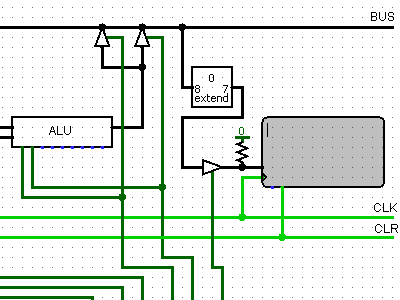
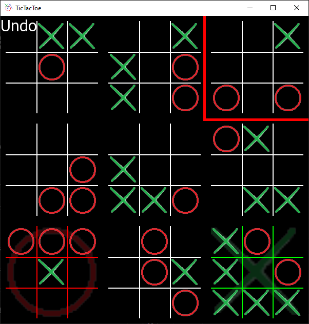
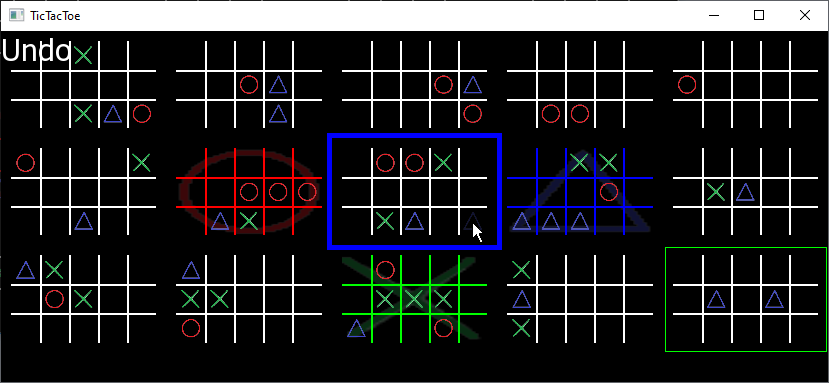

About me
Hello, I am a computer engineering student with an interest in embedded systems
Logisim CPU

This is a simplistic CPU I built and simulated in Logisim. It is capable of basic arithmitic computations, displaying characters.

Advanced Tic Tac Toe
In this game of advanced Tic Tac Toe you strive to take control of several smaller Tic Tac Toe boards, each themselves arranged in a major grid. When placing a tile, you also
This adds a strategic, chess-like element to the game, as you must carefuly consider your moves by predicting the moves of your opponent.
It is also three player! In this mode you play on a 5x3 grid rather than the standard 3x3

